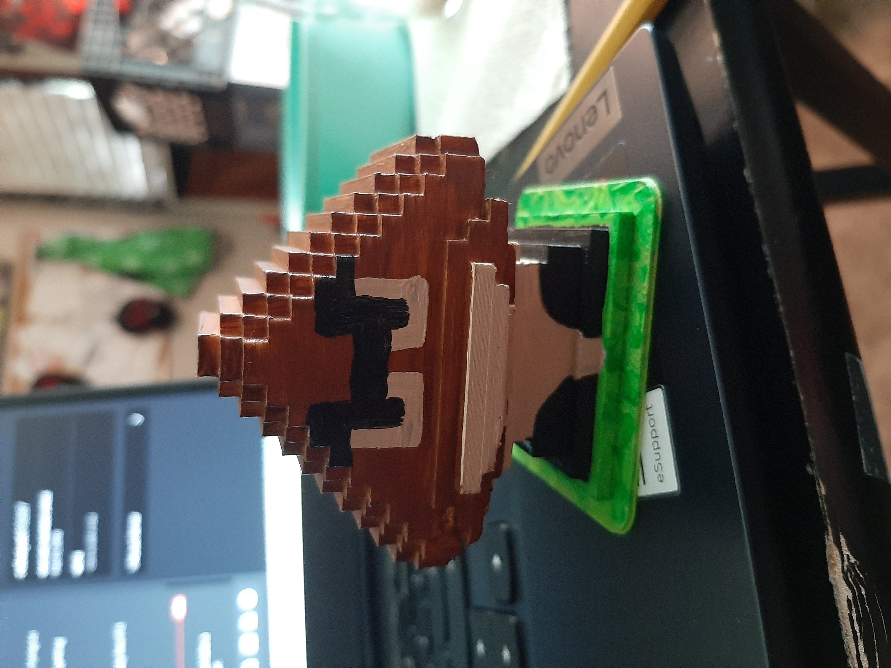

3D Print

This a the 3D print I made from the sculpture we made in Minecraft from the class virtual from. The assignment was to take the sculpture we built, turn it into a file that a 3D printer could read and print the form. The first Goombah had moving feet and was much smaller than my final print. The fist one broke when I was taking the supports off so I knew I needed to build something more structural sound. The 1st printed prototype is below and the second image is the finished printed and painted Goombah.